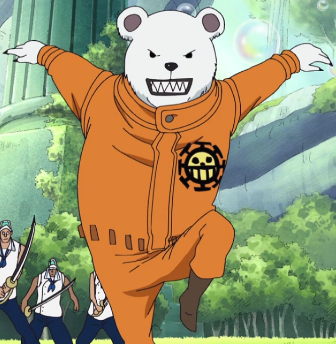

|  | BEPONavigator of the Heart Pirates Bepo is a polar bear mink. He wears an orange jumpsuit that bears the Heart Pirates' jolly roger. He also wears small brown boots and has sharp teeth and claws. He is as tall as a normal bear, considerably taller than common humans. In Wano Country, he had a topknot despite having short fur and no hair. He also wore a yukata with the Heart Pirates' jolly roger surrounded by fish. Bepo tends to get depressed easily and apologizes whenever people point out that he is a talking bear. An example of his sensitivity is when Hancock called him a beast and scolded him for attempting to change the subject. His crewmates also scolded him when he wondered aloud whether Amazon Lily had female bears, much to their annoyance. Overall, members of the Heart Pirates accuse Bepo of having a weak will. Ironically, he was able to remain conscious after taking a blast of Haoshoku Haki from Rayleigh, a feat only the exceptionally strong-willed can accomplish. Those who do not know him call him meek. |
| Navigating | ***** |
| Intelligence | * |
| Eating | *** |